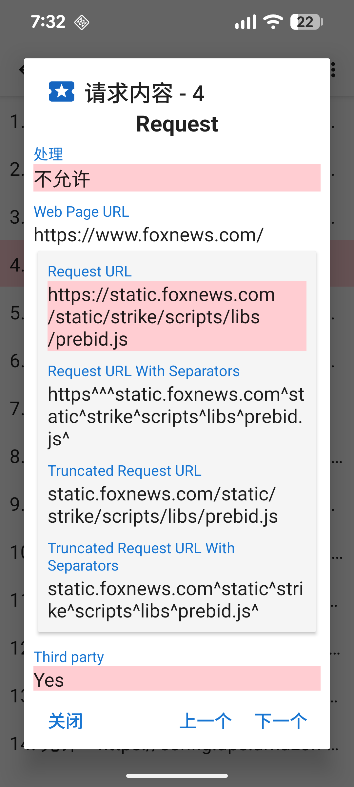
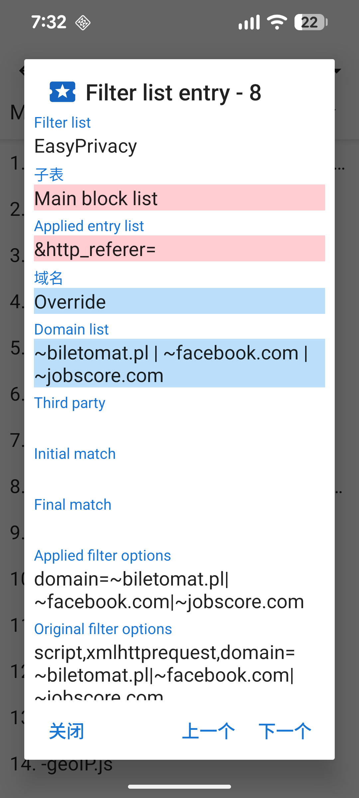

当一个链接加载，会对CCS,JavaScript,图片，和其他东西产生一个标志性的数字，这些请求的详细内容可以在请求活动中查看。导航栏显示链接请求数和被拒绝的请求数，点击请求来获得他为什么被拒绝或允许。

Before a web page loads a resource, it is checked against the filter lists that are enabled in the following order:
All of these lists except for the first are based on the Adblock syntax. UltraPrivacy and UltraList are maintained by Stoutner. The last three filter lists come from the EasyList project.
The raw entries from the filter lists are processed into 6 sublists.
Initial domain lists check against the beginning of the domain. These are very common and placing them in their own sublist allows for more CPU-efficient checking of resource requests. Regular expression lists follow the regular expression syntax.
The contents of the filter lists may be viewed by selecting Filter Lists from the options overflow menu (three dots in the upper-right corner) of the Requests activity.

Because of limitations in Android's WebView, Privacy Browser implements a simplified interpretation of the Adblock syntax. A more detailed description of how the filter list entries are processed is available at stoutner.com.